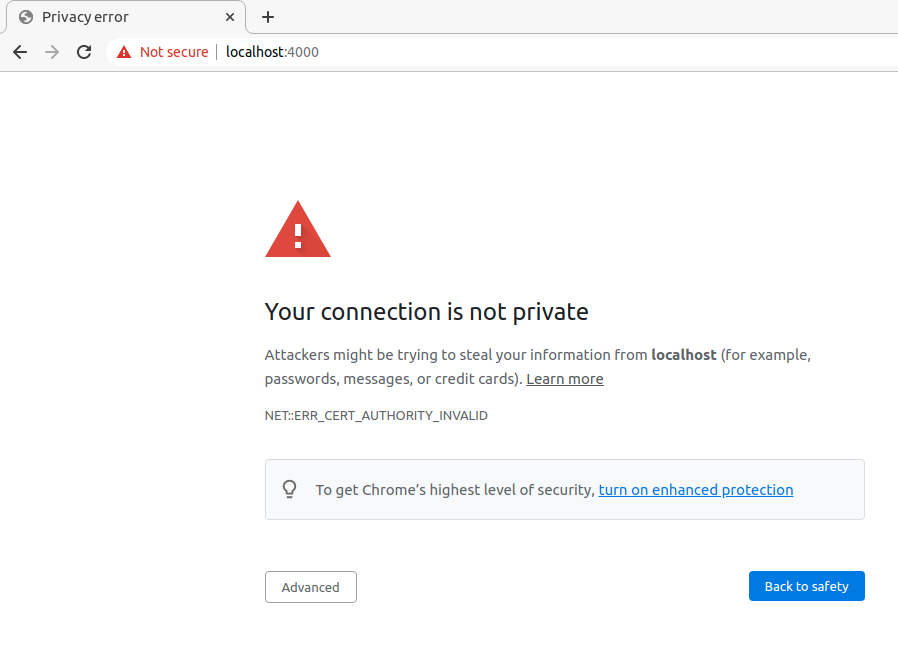
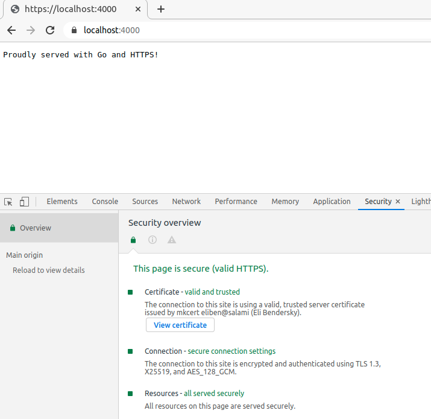

This post is a basic introduction to running HTTPS servers and clients in Go using TLS. It assumes some familiarity with public-key crypto. Feel free to check out my earlier posts about RSA and the Diffie-Hellman Key Exchange; TLS uses the elliptic-curve version of Diffie-Hellman. I won't be covering how the protocol itself works in detail here, but if you're interested I recommend to read up on the subject.
All the code for this post is available in this repository.
A (very) brief intro to TLS
TLS (Transport Layer Security) is a protocol designed to enable client-server communication over the Internet in a way that prevents eavesdropping, tampering and message forgery. It's described in RFC 8446.
TLS relies on state-of-the art cryptography; this is also why it's recommended using the newest version of TLS available, which is 1.3 (as of early 2021). Revisions of the TLS protocol clean up potentially unsafe corner cases, remove weak encryption algorithms and generally try to make the protocol more secure.
When a client connects to a server with plain HTTP, it starts sending plaintext data wrapped in TCP packets right after completing the standard TCP handshake (SYN -> SYN-ACK -> ACK). Using TLS, the situation is somewhat more complicated [1]:
After completing the TCP handshake, the server and client perform a TLS handshake to agree on a shared secret that's unique only to them (and to this specific session). This shared secret is then used to securely encrypt all data being exchanged between them. While there's a lot going on here, it's something the TLS layer implements for us. We just have to set up the TLS server (or client) properly; the actual diff between an HTTP and an HTTPS server in Go is minimal.
TLS certificates
Before we jump to the code showing how to set up an HTTPS server in Go using TLS, let's talk about certificates. In the diagram above, you'll notice that the server sends a certificate to the client as part of its very first ServerHello message. Formally these are known as X.509 certificates, described by RFC 5280.
Public key cryptography plays a major part in TLS. A certificate is a standard way to wrap the server's public key, along with its identity and a signature by a trusted authority (typically a Certificate Authority). Suppose you want to talk to https://bigbank.com; how do you know it's really Big Bank there asking for your password? What if someone is sitting on your cable connection, intercepting all traffic and pretending to be Big Bank (classical MITM - man-in-the-middle attack).
The certificate process is designed to prevent this scenario. When your client's underlying TLS implementation accesses https://bigbank.com, it expects Big Bank's certificate with a public key, signed by a trusted certificate authority (CA). Certificate signatures can form a tree (bank's key signed by A, which is signed by B, which is signed by C, etc.), but at the end of the chain it must have some certificate authority trusted by your client. Modern browsers have a list of pre-trusted CAs (along with their own certificates) built-in. Since your cable snooper cannot forge a trusted certificate's signature, they cannot impersonate Big Bank.
Generating self-signed certificates in Go
For local testing, it's often very useful to be able to work with self-signed certificates. A self-signed certificate is a certificate for some entity E with a public key P, but the key is signed not by a known certificate authority, but rather by P itself. While self-signed certificates have some additional legitimate uses, we'll focus on their use for testing here.
Go's standard library has excellent support for everything related to crypto, TLS and certificates. Let's see how to generate a self-signed certificate in Go!
privateKey, err := ecdsa.GenerateKey(elliptic.P256(), rand.Reader)
if err != nil {
log.Fatalf("Failed to generate private key: %v", err)
}
This code uses the crypto/ecdsa, crypto/elliptic and crypto/rand packages to generate a new key pair [2], using the P-256 elliptic curve, which is one of the allowed curves in TLS 1.3.
Next, we'll create a certificate template:
serialNumberLimit := new(big.Int).Lsh(big.NewInt(1), 128)
serialNumber, err := rand.Int(rand.Reader, serialNumberLimit)
if err != nil {
log.Fatalf("Failed to generate serial number: %v", err)
}
template := x509.Certificate{
SerialNumber: serialNumber,
Subject: pkix.Name{
Organization: []string{"My Corp"},
},
DNSNames: []string{"localhost"},
NotBefore: time.Now(),
NotAfter: time.Now().Add(3 * time.Hour),
KeyUsage: x509.KeyUsageDigitalSignature,
ExtKeyUsage: []x509.ExtKeyUsage{x509.ExtKeyUsageServerAuth},
BasicConstraintsValid: true,
}
Each certificate needs a unique serial number; typically, certificate authorities will have these stored in some database but for our local needs a random 128-bit number will do. This is what the first few lines of the snippet are doing.
Next comes the x509.Certificate template. For more information on what the fields mean, see the crypto/x509 package docs, as well as RFC 5280. We'll just note that the certificate is valid for 3 hours, and is only valid for the localhost domain.
Next:
derBytes, err := x509.CreateCertificate(rand.Reader, &template, &template, &privateKey.PublicKey, privateKey)
if err != nil {
log.Fatalf("Failed to create certificate: %v", err)
}
The certificate is created from the template, and is signed with the private key we've generated earlier. Note that &template is passed in both for the template and parent parameters of CreateCertificate. The latter is what makes this certificate self-signed.
This is it, we have the private key for our server and its certificate (which contains the public key, among other information). All that's left now is to serialize them into files. First, the certificate:
pemCert := pem.EncodeToMemory(&pem.Block{Type: "CERTIFICATE", Bytes: derBytes})
if pemCert == nil {
log.Fatal("Failed to encode certificate to PEM")
}
if err := os.WriteFile("cert.pem", pemCert, 0644); err != nil {
log.Fatal(err)
}
log.Print("wrote cert.pem\n")
And then, the private key:
privBytes, err := x509.MarshalPKCS8PrivateKey(privateKey)
if err != nil {
log.Fatalf("Unable to marshal private key: %v", err)
}
pemKey := pem.EncodeToMemory(&pem.Block{Type: "PRIVATE KEY", Bytes: privBytes})
if pemKey == nil {
log.Fatal("Failed to encode key to PEM")
}
if err := os.WriteFile("key.pem", pemKey, 0600); err != nil {
log.Fatal(err)
}
log.Print("wrote key.pem\n")
We serialize the certificate and the key into PEM files, which looks like this (for the certificate):
-----BEGIN CERTIFICATE-----
MIIBbjCCARSgAwIBAgIRALBCBgLhD1I/4S0fRZv6yfcwCgYIKoZIzj0EAwIwEjEQ
MA4GA1UEChMHTXkgQ29ycDAeFw0yMTAzMjcxNDI1NDlaFw0yMTAzMjcxNzI1NDla
MBIxEDAOBgNVBAoTB015IENvcnAwWTATBgcqhkjOPQIBBggqhkjOPQMBBwNCAASf
wNSifB2LWDeb6xUAWbwnBQ2raSQTqqpaR1C1eEiy6cgqUiiOlr4jUDDiFCly+AS9
pNNe8o63/Gab/98dwFNQo0swSTAOBgNVHQ8BAf8EBAMCB4AwEwYDVR0lBAwwCgYI
KwYBBQUHAwEwDAYDVR0TAQH/BAIwADAUBgNVHREEDTALgglsb2NhbGhvc3QwCgYI
KoZIzj0EAwIDSAAwRQIgYlJYGIwSvA+AmsHe8P34B5+hlfWEK4+kBmydJ65XJZMC
IQCzg5aihUXh7Rm0L1K3JrG7eRuTuFSkHoAhzk4cy6FqfQ==
-----END CERTIFICATE-----
If you've ever set up SSH keys, the format should look familiar. We can use the openssl command-line tool to show its contents:
$ openssl x509 -in cert.pem -text
Certificate:
Data:
Version: 3 (0x2)
Serial Number:
b0:42:06:02:e1:0f:52:3f:e1:2d:1f:45:9b:fa:c9:f7
Signature Algorithm: ecdsa-with-SHA256
Issuer: O = My Corp
Validity
Not Before: Mar 27 14:25:49 2021 GMT
Not After : Mar 27 17:25:49 2021 GMT
Subject: O = My Corp
Subject Public Key Info:
Public Key Algorithm: id-ecPublicKey
Public-Key: (256 bit)
pub:
04:9f:c0:d4:a2:7c:1d:8b:58:37:9b:eb:15:00:59:
bc:27:05:0d:ab:69:24:13:aa:aa:5a:47:50:b5:78:
48:b2:e9:c8:2a:52:28:8e:96:be:23:50:30:e2:14:
29:72:f8:04:bd:a4:d3:5e:f2:8e:b7:fc:66:9b:ff:
df:1d:c0:53:50
ASN1 OID: prime256v1
NIST CURVE: P-256
X509v3 extensions:
X509v3 Key Usage: critical
Digital Signature
X509v3 Extended Key Usage:
TLS Web Server Authentication
X509v3 Basic Constraints: critical
CA:FALSE
X509v3 Subject Alternative Name:
DNS:localhost
Signature Algorithm: ecdsa-with-SHA256
30:45:02:20:62:52:58:18:8c:12:bc:0f:80:9a:c1:de:f0:fd:
f8:07:9f:a1:95:f5:84:2b:8f:a4:06:6c:9d:27:ae:57:25:93:
02:21:00:b3:83:96:a2:85:45:e1:ed:19:b4:2f:52:b7:26:b1:
bb:79:1b:93:b8:54:a4:1e:80:21:ce:4e:1c:cb:a1:6a:7d
HTTPS server in Go
Now that we have the certificate and private key in hand, we are ready to run an HTTPS server! Once again, the standard library makes it very easy, though it's important to mention that security is a very tricky issue. Before exposing your server to the public Internet, consider consulting with a security engineer about best practices and what configuration options to be aware of [3].
Here's a basic HTTPS server in Go:
func main() {
addr := flag.String("addr", ":4000", "HTTPS network address")
certFile := flag.String("certfile", "cert.pem", "certificate PEM file")
keyFile := flag.String("keyfile", "key.pem", "key PEM file")
flag.Parse()
mux := http.NewServeMux()
mux.HandleFunc("/", func(w http.ResponseWriter, req *http.Request) {
if req.URL.Path != "/" {
http.NotFound(w, req)
return
}
fmt.Fprintf(w, "Proudly served with Go and HTTPS!")
})
srv := &http.Server{
Addr: *addr,
Handler: mux,
TLSConfig: &tls.Config{
MinVersion: tls.VersionTLS13,
PreferServerCipherSuites: true,
},
}
log.Printf("Starting server on %s", *addr)
err := srv.ListenAndServeTLS(*certFile, *keyFile)
log.Fatal(err)
}
It serves a single handler on the root path. The interesting part is the TLS configuration, as well as the ListenAndServeTLS call, which takes the paths to a certificate file and a private key file (in PEM format, just as we generated them earlier). The TLS configuration has many possible fields; here, I opted for a relatively strict protocol of forcing TLS 1.3 at minimum. TLS 1.3 comes with strong security out of the box, so this is a good option if you can ensure all your clients understand this version (and in 2021, they should!)
The diff from a plain HTTP server is fewer than 10 lines of code! The bulk of the server's code (handlers for specific routes) is completely oblivious to the underlying protocol and won't change.
With this server running locally (and serving on port 4000 by default), Chrome will initially balk when accessing it:
That's because a web browser will not, by default, accept a self-signed certificate. As mentioned above, browsers come with a hard-coded list of CAs they trust, and our self-signed certificate is obviously not one of them. We can still proceed to the server by clicking Advanced and then allowing Chrome to go on, accepting the risk explicitly. It will then show us the website, albeit grudgingly (with a red "Not secure" sign in the address bar).
If we try to curl to the server, we'll also get an error [4]:
$ curl -Lv https://localhost:4000
* Trying 127.0.0.1:4000...
* TCP_NODELAY set
* Connected to localhost (127.0.0.1) port 4000 (#0)
* ALPN, offering h2
* ALPN, offering http/1.1
* successfully set certificate verify locations:
* CAfile: /etc/ssl/certs/ca-certificates.crt
CApath: /etc/ssl/certs
* TLSv1.3 (OUT), TLS handshake, Client hello (1):
* TLSv1.3 (IN), TLS handshake, Server hello (2):
* TLSv1.3 (IN), TLS handshake, Encrypted Extensions (8):
* TLSv1.3 (IN), TLS handshake, Certificate (11):
* TLSv1.3 (OUT), TLS alert, unknown CA (560):
* SSL certificate problem: unable to get local issuer certificate
* Closing connection 0
curl: (60) SSL certificate problem: unable to get local issuer certificate
More details here: https://curl.haxx.se/docs/sslcerts.html
curl failed to verify the legitimacy of the server and therefore could not
establish a secure connection to it. To learn more about this situation and
how to fix it, please visit the web page mentioned above.
By reading the docs, we can find that curl can be made to trust our server by providing it with the server's certificate into the --cacert flag. If we try that:
$ curl -Lv --cacert <path/to/cert.pem> https://localhost:4000
* Trying 127.0.0.1:4000...
* TCP_NODELAY set
* Connected to localhost (127.0.0.1) port 4000 (#0)
* ALPN, offering h2
* ALPN, offering http/1.1
* successfully set certificate verify locations:
* CAfile: /home/eliben/eli/private-code-for-blog/2021/tls/cert.pem
CApath: /etc/ssl/certs
* TLSv1.3 (OUT), TLS handshake, Client hello (1):
* TLSv1.3 (IN), TLS handshake, Server hello (2):
* TLSv1.3 (IN), TLS handshake, Encrypted Extensions (8):
* TLSv1.3 (IN), TLS handshake, Certificate (11):
* TLSv1.3 (IN), TLS handshake, CERT verify (15):
* TLSv1.3 (IN), TLS handshake, Finished (20):
* TLSv1.3 (OUT), TLS change cipher, Change cipher spec (1):
* TLSv1.3 (OUT), TLS handshake, Finished (20):
* SSL connection using TLSv1.3 / TLS_AES_128_GCM_SHA256
* ALPN, server accepted to use h2
* Server certificate:
* subject: O=My Corp
* start date: Mar 29 13:30:25 2021 GMT
* expire date: Mar 29 16:30:25 2021 GMT
* subjectAltName: host "localhost" matched cert's "localhost"
* issuer: O=My Corp
* SSL certificate verify ok.
* Using HTTP2, server supports multi-use
* Connection state changed (HTTP/2 confirmed)
* Copying HTTP/2 data in stream buffer to connection buffer after upgrade: len=0
* Using Stream ID: 1 (easy handle 0x557103006e10)
> GET / HTTP/2
> Host: localhost:4000
> user-agent: curl/7.68.0
> accept: */*
>
* TLSv1.3 (IN), TLS handshake, Newsession Ticket (4):
* Connection state changed (MAX_CONCURRENT_STREAMS == 250)!
< HTTP/2 200
< content-type: text/plain; charset=utf-8
< content-length: 33
< date: Mon, 29 Mar 2021 13:31:34 GMT
<
* Connection #0 to host localhost left intact
Proudly served with Go and HTTPS!
Success!
We can also talk to our server using a custom HTTPS client written in Go. Here's the code:
func main() {
addr := flag.String("addr", "localhost:4000", "HTTPS server address")
certFile := flag.String("certfile", "cert.pem", "trusted CA certificate")
flag.Parse()
cert, err := os.ReadFile(*certFile)
if err != nil {
log.Fatal(err)
}
certPool := x509.NewCertPool()
if ok := certPool.AppendCertsFromPEM(cert); !ok {
log.Fatalf("unable to parse cert from %s", *certFile)
}
client := &http.Client{
Transport: &http.Transport{
TLSClientConfig: &tls.Config{
RootCAs: certPool,
},
},
}
r, err := client.Get("https://" + *addr)
if err != nil {
log.Fatal(err)
}
defer r.Body.Close()
html, err := io.ReadAll(r.Body)
if err != nil {
log.Fatal(err)
}
fmt.Printf("%v\n", r.Status)
fmt.Printf(string(html))
}
The only part making this different from a standard HTTP client is the TLS setup. The important bit is setting up the RootCAs field of the tls.Config struct. This is telling Go which certificates the client can trust.
Other options for generating certificates
You may not know that Go comes with a tool to generate self-signed TLS certificates, right in the standard installation. If you have Go installed at /usr/local/go, you can run this tool with:
$ go run /usr/local/go/src/crypto/tls/generate_cert.go -help
In general, it accomplishes the same goal as the first code snippet in this post, but whereas my snippet makes some opinionated decisions about what to generate, generate_cert is configurable with flags and supports several different options.
As we've seen, while self-signed certificates can work for testing, they're not ideal for all scenarios. For example, it's difficult to make browsers trust them, and even then the user experience doesn't fully replicate the "real world" one.
Another option for generating local certificates for testing is the mkcert tool. It creates a local certificate authority (CA), and adds it to your system's trusted list of CAs. It then generates certificates signed by this authority for you, so as far as the browser is concerned, they're fully trusted.
If we run our simple HTTPS server with a certificate/key generated by mkcert, Chrome will happily access it without warnings; we can also see the details in the Security tab of developer tools:
curl will also successfully contact the server without requiring a cacert flag, because it checks the system's trusted CAs already.
If you're looking for real certificates, Let's Encrypt is of course a natural option, using the certbot client or something similar. In Go, libraries like certmagic can automate the interaction with Let's Encrypt for servers.
Client authentication (mTLS)
So far the examples we've seen have the server providing its (CA-signed) certificate to the client to prove that the server is legitimately who it claims to be (e.g. your bank's website, before you agree to provide your password).
This idea is easy to extend to mutual authentication, where the client also has a signed certificate to prove its identity. In the world of TLS, this is called mTLS (for mutual TLS), and could be useful in many settings where internal services have to communicate with each other securely. Public-key crypto is generally considered more secure than passwords.
Here's a simple HTTPS server with client authentication. The lines that changed from the earlier HTTPS server are highlighted:
func main() {
addr := flag.String("addr", ":4000", "HTTPS network address")
certFile := flag.String("certfile", "cert.pem", "certificate PEM file")
keyFile := flag.String("keyfile", "key.pem", "key PEM file")
clientCertFile := flag.String("clientcert", "clientcert.pem", "certificate PEM for client authentication")
flag.Parse()
mux := http.NewServeMux()
mux.HandleFunc("/", func(w http.ResponseWriter, req *http.Request) {
if req.URL.Path != "/" {
http.NotFound(w, req)
return
}
fmt.Fprintf(w, "Proudly served with Go and HTTPS!")
})
// Trusted client certificate.
clientCert, err := os.ReadFile(*clientCertFile)
if err != nil {
log.Fatal(err)
}
clientCertPool := x509.NewCertPool()
clientCertPool.AppendCertsFromPEM(clientCert)
srv := &http.Server{
Addr: *addr,
Handler: mux,
TLSConfig: &tls.Config{
MinVersion: tls.VersionTLS13,
PreferServerCipherSuites: true,
ClientCAs: clientCertPool,
ClientAuth: tls.RequireAndVerifyClientCert,
},
}
log.Printf("Starting server on %s", *addr)
err = srv.ListenAndServeTLS(*certFile, *keyFile)
log.Fatal(err)
}
The changes are pretty much what you'd expect; in addition to setting up its own certificate, key and TLS config, the server loads a client certificate and sets TLSConfig to trust it. Naturally, this could also be the certificate of a locally trusted CA which signs client certificates.
And this is an HTTPS client which authenticates itself when connecting to a server; again, the lines that changed from the earlier (non-mTLS) client are highlighted:
func main() {
addr := flag.String("addr", "localhost:4000", "HTTPS server address")
certFile := flag.String("certfile", "cert.pem", "trusted CA certificate")
clientCertFile := flag.String("clientcert", "clientcert.pem", "certificate PEM for client")
clientKeyFile := flag.String("clientkey", "clientkey.pem", "key PEM for client")
flag.Parse()
// Load our client certificate and key.
clientCert, err := tls.LoadX509KeyPair(*clientCertFile, *clientKeyFile)
if err != nil {
log.Fatal(err)
}
// Trusted server certificate.
cert, err := os.ReadFile(*certFile)
if err != nil {
log.Fatal(err)
}
certPool := x509.NewCertPool()
if ok := certPool.AppendCertsFromPEM(cert); !ok {
log.Fatalf("unable to parse cert from %s", *certFile)
}
client := &http.Client{
Transport: &http.Transport{
TLSClientConfig: &tls.Config{
RootCAs: certPool,
Certificates: []tls.Certificate{clientCert},
},
},
}
r, err := client.Get("https://" + *addr)
if err != nil {
log.Fatal(err)
}
defer r.Body.Close()
html, err := io.ReadAll(r.Body)
if err != nil {
log.Fatal(err)
}
fmt.Printf("%v\n", r.Status)
fmt.Printf(string(html))
}
Before we try it, we'll need to change our certificate generating script to generate certificates suitable for clients as well. The change is in this line:
ExtKeyUsage: []x509.ExtKeyUsage{x509.ExtKeyUsageServerAuth},
Which changes to:
ExtKeyUsage: []x509.ExtKeyUsage{x509.ExtKeyUsageServerAuth, x509.ExtKeyUsageClientAuth},
Now let's do a trial run. Start by generating separate certificates/keys for client and server:
# client cert
$ go run tls-self-signed-cert.go
2021/04/03 05:51:25 wrote cert.pem
2021/04/03 05:51:25 wrote key.pem
$ mv cert.pem clientcert.pem
$ mv key.pem clientkey.pem
# server cert
$ go run tls-self-signed-cert.go
2021/04/03 05:51:42 wrote cert.pem
2021/04/03 05:51:42 wrote key.pem
Running the mTLS server, it should pick up the right files based on flag defaults:
$ go run https-server-mtls.go
2021/04/03 05:54:51 Starting server on :4000
In a separate window, if we run the older (non-mTLS) client, we get an error:
$ go run https-client.go
2021/04/03 05:55:24 Get "https://localhost:4000": remote error: tls: bad certificate
exit status 1
And the server log will show that "client didn't provide a certificate". However, if we run the new mTLS client, it works:
$ go run https-client-mtls.go
200 OK
Proudly served with Go and HTTPS!
While this demonstrates the mechanics of running mTLS servers and clients, in reality there'd be a lot more to do, especially to manage certificates, certificate renewal and revocation, and trusted CAs. This is called Public Key Infrastructure (PKI), and it's a large topic outside the scope of this modest post.
| [1] | This image is taken from hpbn.co, licensed under CC BY-NC-ND 4.0. |
| [2] | The value returned by GenerateKey has type ecdsa.PrivateKey, which also embeds an ecdsa.PublicKey, so it's actually a key pair. |
| [3] | Another option to consider is setting up a reverse proxy between your service and the outside world. Reverse proxies like Nginx or Caddy (which itself is written in Go) are battle-tested and have clear instructions for secure setup. An additional benefit of reverse proxies is that they can provide simple load-balancing for heavily loaded services. |
| [4] | curl's verbose log here is an interesting description of the process of a TLS handshake! |